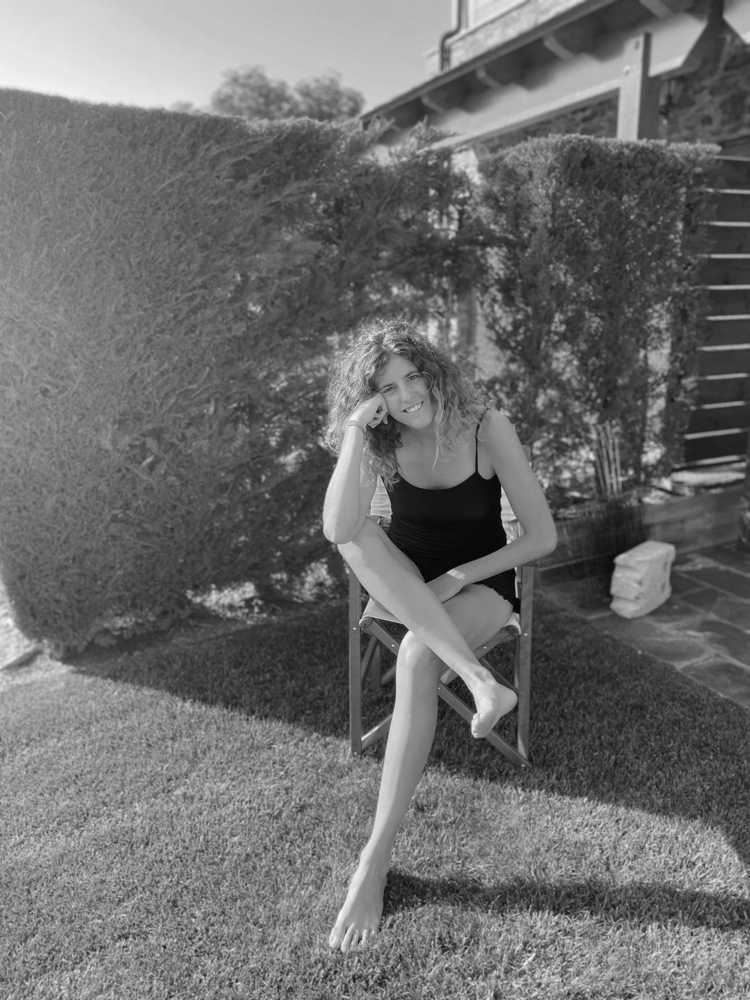

About
 Hey! My name is Paula Batlle.
I’m an enthusiastic graphic designer and visual communicator, specialized in designing digital experiences and not digital.
I like to pay attention to every little detail. Designers need to be observers. This is why I’m always thinking and taking notes and pictures.
I define myself as an empathetic, reflective, investigative, organizer & leadership capacity person.
I’m attracted by the forms and contrasts of typographic characters, the color combinations and the sustainability of the packaging. For me, design has to be aesthetic and functional; design allows you to explore further and find new perspectives and concepts.
I’m passionate about thinking of solutions and solving them through design to contribute to improve the world around me. That’s why I’m constantly looking forward to any kind of collaboration and to the creation of new opportunities with other people. Feel free to get in touch!
Want to know more?